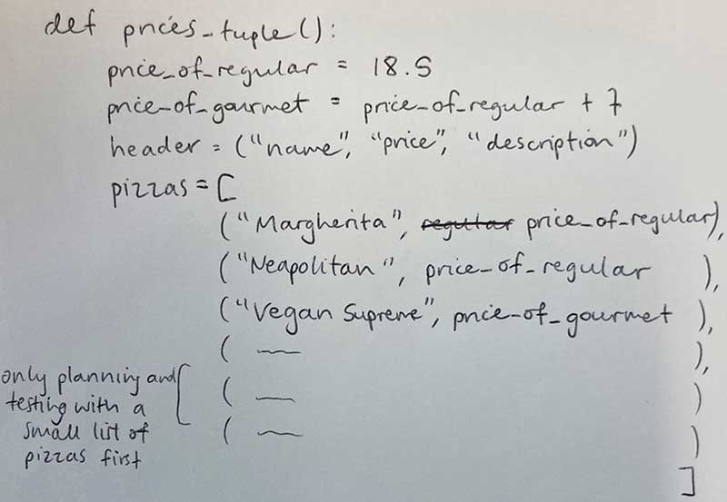
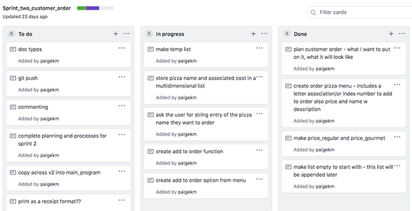
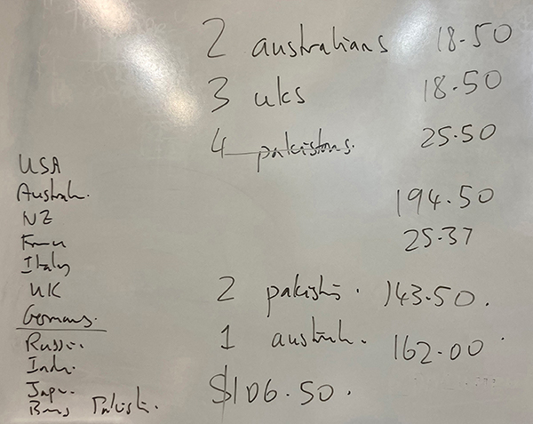
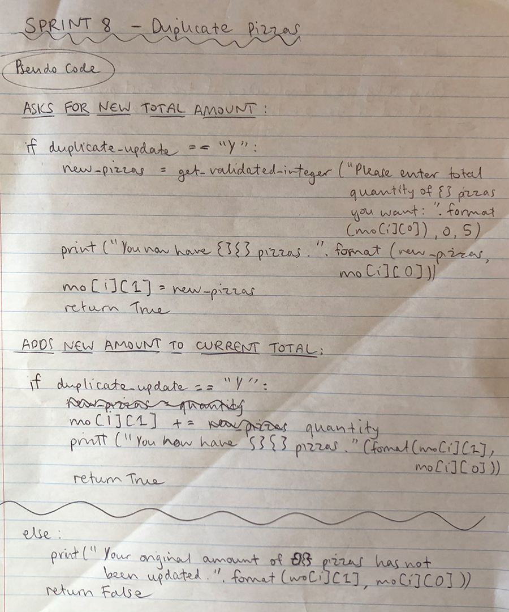
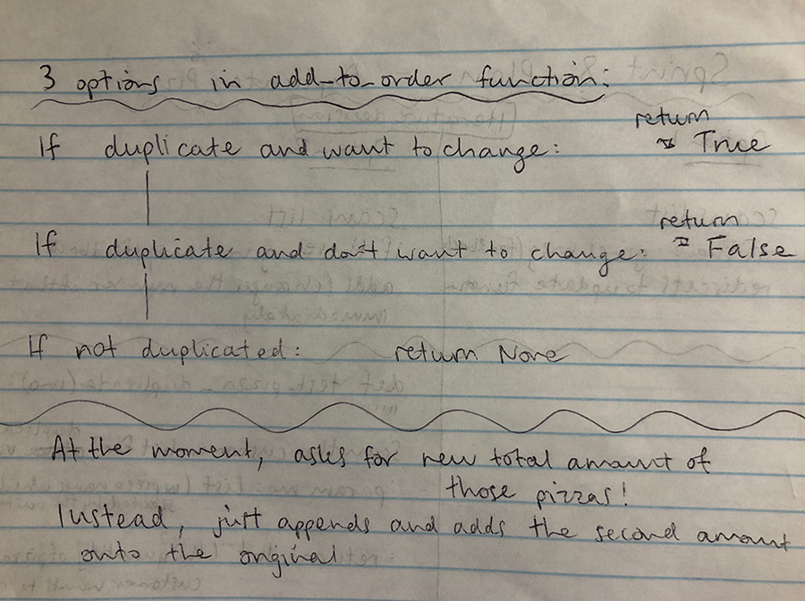

Brief
To create a program which allows a user to enter customer order (phone, name, pickup/delivery requirements and their pizza order).
This information, including delivery details, itemised order and total cost, will be stored and displayed to the user in a receipt format.
Overall Project Backlog
This is my Project Backlog at the end of the project.
The Done column shows all the functions I incorporated, and the To Do column shows potential additions I could develop in the future.
I effectively used Github Kanban Boards for project management, to manage the develop of this program. By having a running Project Backlog throughout, I could prioritise different stages of work. The backlog list is infinite, and so even as I complete features in the To-Do column, there will always be potential future ideas. This backlog is ordered in priority so it is easy to know which function/feature to add next.
Sprint One
A program which offers a basic main menu, with an option to either View the pizza menu, or Quit the program.
If the user chooses the Quit option, they are asked for confirmation to either end the program or return to the main menu.

Sprint board

Evidence of Git commit (to update Github remote repository) as it is the end of a Sprint/feature added.

Test to show the basic program I created in Sprint 1:
Reflection
This first sprint was successful as I created a basic program as outlined in the aim. The confirmation option was important to avoid miscommunication.
Next step is to create a feature to start ordering; add a pizza and store this information in an order list.
Sprint Two
A program which allows the user to enter the customer's pizza order and stores this information.
This sprint's 'add' function, adds a new pizza to the order. When this function is called, it prints the pizza menu, requests user input of the index number for the pizza type they would like to order, and requests an integer entry for how many of that pizza type they would like.
Finally, it prints their order so far in a simple format.

I also considered and planned a different way for the user to select a pizza, avoiding the use of Index numbers (which may be confusing and new for a user):
If this was the plan I chose to implement, I would also consider validating the user entry of a country name, for likeness (in case of spelling errors).
Sprint board
User testing:
Frau:
After Frau tested my programme, in confirming whether they want to quit, instead of having Q and B, I used ‘Y’ and ‘N’ because Frau tried to enter those commands.
I also found out I needed to clarify what an index number is, so I added an extra column heading saying “index” to give Frau an idea of what she needs to enter when asked to choose a pizza. This is important to consider, as shown in the plan above, if I could avoid the user having to enter an index number (unfamiliar concept to most people) it would be ideal.
Testing:
Below are some errors I found when testing Sprint Two, and how I addressed/plan to address them.
Index out of range:
Solution to error:
I will address this error in Sprint Three, by creating a validated integer entry function which does not allow the user to enter a pizza index that is out of range, and will give feedback.
From this error, I learnt that the current version of my program is pretty inflexible, as I used literal values. In future versions, I will use derived values eg. len(list), to avoid out of range errors as literal values won't work if the order list changes in length. The use of derived values or constants, is also more efficient, as the value can be changed in one place rather than having to make changes throughout the code (for example in future Sprints when I implemented a limit of max 5 pizzas of each type, as when it's not a literal value, this number of 5max can easily be changed if the restaurant wanted).Using the pizza's index number (rather than pizza name) when printing the receipt and user messages

Solution to error:

Re-asks to "Start" order midway through
I wanted my program to tell the user when a completely new order has started. However when I tried to implement this, it printed a message informing the user their order had begun, everytime they went to the main menu.
Solution to error:

To resolve this problem, I created a loop for 'start', showing when the order had begun and when they were just doing another action from the main menu eg. not restarting a new order. This enabled me to only print a "new order has started" message when this was True. This became especially helpful later in Sprint 8, as I added a feature to Cancel, and this message helped to communicate to the user that their old order had been cancelled and a new one had started.
This is important when addressing Usability, as it communicates the current status of the program to the user.
From this error, I learnt communicating with the user is really important (relevant implication of Usability) and anytime I reference the pizza the user has ordered in the future, I will reference it's actual name.
Reflection
At this stage, the program is functional, however through testing I learnt that it crashes very easily. This is because user input is not yet validated, so if the user makes any mistake or misunderstanding when entering, there is an error.
My next steps are to validate the user's entries so far, when adding a pizza to their order or entering any other menu option, so that the program doesn't crash but reasks for their entry and continues.
Sprint Three
This is my Validations Sprint. Validating my functions enables me to set boundaries for the user's input, and ensures the program doesn't crash when unexpected input is entered.
Plan

Design decision

Sprint board
Testing:
I used the weaknesses I found through testing Sprint 2, to improve the program's functionality with this Sprint 3. Validating user entries meant there were no opportunities for the program to fail/crash. Below is the improved program - showing the error messages that print before asking for reentry from the user (rather than crashing like it did previously), when different invalid entries are tested.
- If the user enters a string when an integer is requested
- If the user enters an integer when a string is requested
- If the user enters an string that isn't one of the menu options
- If the user tries to enter more pizzas than is allowed
- More specific feedback explaining index number and ordering limitations


Reflection:
Now that my validations file containing functions - get_validated_integer and get_validated_string - has been incorporated into the program, the length and character type of user input is validated when adding a pizza or selecting a main menu option.
Questioning how many pizzas of each type the user can order, (in order to validate user entry for amount of pizzas), led me to consider having a max number of pizzas the user can order in total. In order to set a boundary for the total number of pizzas, I now have to make a function to calculate the total pizzas in the order.
Sprint 3.5
This sub-sprint incorporates a Totals function, which calculates the total number of pizzas in the order so far. Creating this function allows me to validate the user's entry, by ensuring there can be a limit (50 max) of the total number of pizzas in their order.
Design process of two different ways to potentially create a validated totals function (through a new totals function):
This is the way I decided to actually implement a max of 50 pizzas total in the add_to_order function (with a conditional statement):
Testing:
When testing, I wanted to quickly understand the program and show that the order is being appended correctly etc.
Here are two examples of different temp lists I made for easy testing to speed up my design process, which were called when I selected a 'test' menu option.
Totals function working:

Failed validation:

Validated totals function working:

In this test, I set the max total number of pizzas to 5, to make the testing process faster (as you can only order max 5 pizzas of each type at once so ordering 50+ would be time inefficent). During this test, I created a print statement saying "You currently have _ pizzas in the order." to ensure the totals function was working correctly and to keep track of the order status. I decided to keep this statement beyond just testing, because it is helpful for communication with the user; keeping them up to date with how many pizzas they have ordered.
Evidence of a successful git commit and git history at the end of Sprint 3:
Reflection:
Now a maximum of 50 pizzas in the order has successfully been implemented. This means that the user's entry of number of pizzas in the add_to_order function, will be validated so that this new addition doesn't result in more than 50 pizzas in the order. In the next sprint I will address an issue I found during testing. When the list is empty and the user asks to 'Review', the program should print a message to say "You haven't begun your order yet" and return to the main menu.
Sprint Four
A new function which calculates total cost, and prints this information in a receipt when reviewing the customer order so far (and when confirming order at the end).
Plan

Kanban Board

Testing (for functionality before printing in a reciept format):
Calculate the cost of each type of pizza

Calculate the total cost of order (total price function)

Sprint 4.5
A program which calculates the GST of the order, and shows this below the total cost on the receipt.
Plan:

Reflection:
When printing this order information (including GST) in a receipt format, I imitated the formatting of an actual Countdown reciept.


In future sprints I am planning to carry out more validations. Testing this Sprint with a receipt being printed, made me realise that if a user enters 'Germany' pizzas through the add function, on two different occasions, it prints as two different pizzas in the receipt. A future feature I will add (in Sprint 8) is preventing the reciept from printing a pizza type twice.
This process also inspired me to add a future feature to the Project Backlog (although I didn't acheive it this project) - a program which allows the user to enter different currencies (relates to the Relevant Implications of Cultural and Accessibility).
Overall Project backlog at this point

Code checker - at the end of Sprint 4


Git commit and git history at the end of Sprint 4

Sprint Five
My Sprint 5 is about creating an update function. This new update option in the menu allows the user to review their current order status, to remove currently ordered pizzas or to change the number of pizzas ordered.
Purpose of Sprint 5

Two plans for different ways of designing the Update function:


Kanban Board
Testing
Through testing I realised that my get validated integer function, which limited the user to only ordering 5 pizzas of one type maximum, wasn't working in this update function.

Error as the price of Africa was being changed rather than number of Russia
Solution as the correct update is taking place and is shown in the receipt

Testing the menu option to delete a pizza type:
Run through of this Sprint/the Update function working
Sprint Six
In this Sprint, rather than creating a new function, I decided to run a "Cancel order" feature in the Main Menu. In all the functions that the user could be led to through the other menu options, there s always a quit option available which returns them to the main menu. This means this new Cancel feature is easily accessible from anywhere in the program, addressing the implication of Functionality.
Plan

Kanban Board

Run through of Cancel functioning correctly:
Code checker at the end of Sprint 4 (before and after)
User test with a customer situation
I carried out a user test with Mr Khouri, at the point when my program was developed up to the end of Sprint 6.
The customer order

Video of my program completing the above order:
Things I learnt from this test:
I accidentally selected the add option, because of the customer's langauge saying they want to add one more Australia pizza. I should have selected the update option. In future the add option should lead to the update function, if that pizza type has already got some pizzas in the order.
Improvements to make in future versions:
Sprint Seven
A program which asks for and stores customer details, depending on whether their order is for delivery or pickup. Function gets the customer details:
1 - request delivery or pickup (also adds delivery charge under certain conditions)
2 - basic form to enter Name, Address (validated get_string function to allow more than 1 character and set character limits and check for valid characters (for example no * or !))
Plan:

Video of my program finding an error after adding delivery charge:
Testing
Error 1 - Selecting the finalise order option, although you haven't filled out customer details yet.

Solution:
Error 2 - $3 charge didn't add on to the total cost
Through testing I discovered that although the delivery fee was printed in the receipt, the total cost wasn't being adapted.

Error found when testing with a real life user - Sophie
Final program working with customer details function incorporated:

Video of real user test of working program (that includes delivery or pickup):
Sprint Eight
A sprint to validate the user's entry; so that they can't order a new Russia pizza, if they have already ordered some Russia pizzas, but instead adds onto the existing number of those pizzas in the order.
Plan:

Iterative decision:
This decision is whether I validate the add_to_order function's pizza entry to print a message saying "you can't do this" and to "return to the main menu and select Update instead", to redirect them to the Update option, or to create a new function make a sum of all pizzas of one type, regardless of what stage of the order they were added during.
Plan showing two options for the duplicate function.

I carried out both of these options as seen in the videos below.
If duplicated asks user to enter the total they want for that pizza type
If duplicated uses information collected from the Add new pizza function, to add these new pizza onto what is already ordered
Working duplicate pizza function:

Errors found during testing:
Changes not reflected in receipt

Only recognises duplicate (only runs Duplicate function), if the first pizza ordered is the duplicated one
Solution: Is now case sensitive, so it always notices the duplicate
Validated entries for Customer Details Plan:
Cassie - User test at the end of Sprint 8
Sprint Nine
Aim:
The purpose of this sprint was to clean up all my functions and ensure the program doesn't crash, no matter what entries you throw at any part of it! This was important, espcecially carrying out testing with real life users ("simulation tests"), to test the program's functionality against circumstances that a real life phone operator could come across.
Test showing Grace finding errors in my program:
Redirecting the user straight to fill out Customer Details, during Finalise order:
Function to get validated Y or N (yes or no) entry:
Function to get validated phone number:
Photo showing error as allows letters to be entered in a phone number - why this validation function is important!
Testing the phone number validation function with a range of lengths and character types:
Function to get validated suburb:
Ensuring Cancel and Finalise functions work properly:
Video to show that customer details and delivery charge do not refresh back to 0, when select Cancel order or at the end of Finalising the previous order.
Applying a limit of max 5 and total max 50 pizzas in Duplicate function:
When running Finalise option, continually reasked for Customer details even if it already knew them:
Reflection:
In this final sprint cleaning up, I also made a few decisions to make communication with the user better. An example of this is I wrote {} character/s and {} pizza/s in the error messages, as I noticed that often the number of characters or pizzas was 1, so the grammar was off.
Final code checker for style issues
I ran my main_program code through WOF code checker and resolved any final style issues. One that I was surprised by, was that a function name cannot contain capitals, eg. get_validated_integer_Y_or_N was invalid!
I also ran the validations file's code through the checker and resolved all style issues.
Finally, I used the feature in PyCharm, which shows errors and explains why in a side panel, to resolve any other issues.
End of Project commit (Git; evidence of versions) and Kanban Board (Github) history/current status:

Final testing and user test of my completed program:
I carried out extensive testing, to ensure there are no crashes and all my validations are working.
Test the whole program for entry boundaries:
I tested boundaries for example for the user's entry of their phone number. 1-15 characters are boundary cases for a phone number, so I tested that the program works when values within this range are entered. Along with testing for expected cases (eg. 8 characters), I also tested unexpected cases (in this case 0 or 20).
When designing and testing the boundaries for index numbers, I had to be careful because index numbers are assigned to different pizza types when in main menu vs order list, and so my boundaries (min and max values) needed to be flexible.
Test the whole program for entries of the wrong character type eg. +, o, -, letters when numbers etc.
Error as mentioned in above video, the validation feedback for phone number mentions character length before character type. I think it makes more logical sense to check the entry is only numbers and dashes, before worrying about entry length. I also had to adapt the length of the phone number from max 11 characters to 15, because I allow dashes in the entry, and up to 3 or 4 dashes are normally added to each phone number. So I changed this and now the error messages for phone number entry appear like this:
Test the whole program for entries of nothing or with spaces:
Final User Test with my Dad (shows the final program functioning correctly in Idle):
When developing this program, I used Agile practices. I developed the program, incrementally using iterations, as each new feature required a new function and a new testing file. I also used Agile as we used 'Scrum' and held StandUps at the start of each lesson working on the program.
As seen above with Git commit history and Kanban boards, I also used Git (for version control) and Github (remote repository). This enabled me to restore any previous iterations of the program if I wanted. Anytime I wanted to add a new feature, I used a new Kanban Sprint Board on GitHub to plan, and then created a new testing file on Git (to integrate into my main program). Regularly I carried out Git Commits, to ensure the remote repository Github, held the most recent version of my planning site and program.
Lesson Standups


Relevant Implications Summary
Future Proofing
Describe: This relevant implication considers whether or not it is easy to update and add new features to the program. A well ‘Future Proofed’ program would allow a different programmer to update and add features. For this reason, to ensure Future Proofing the code has to be ‘easy’ for other programmers to understand.
Address:
The main way I addressed Future Proofing, was by using docstrings to describe the purpose of all my functions, and using extensive commenting to describe the purpose of other sections of code. This makes it easier for another programmer to be quickly “onboarded” into my project, and understand how the design decisions I made, work.
I also addressed this implication by using code checkers to ensure my code fits with python conventions. This ensures all tab indents, spacings and line lengths fit the conventions that the new programmer is familiar with.
I further addressed Future Proofing, by building my program around a function structure. This means that when a new feature is to be added, this implies a new function. This makes my program easier to navigate and informs a programmer the way to add a new feature.
This function based structure of my program, also means that changes and new features can easily be integrated into the main program - as a new function can be tested in a testing file first, then integrated smoothly.
Functionality
Describe: A functional program works well and loads quickly. This relevant implication ensures that the program is free from bugs or glitches and does not crash. Functionality is also considered, as a program needs to add up and store values correctly. The program should also be able to work and appear properly on all browsers and devices, and all the links should work correctly.
Address: I addressed this implication through regular testing. I tested each function in a testing file for that Sprint, and then tested again after integrating into the main program. This ensured that my program was functional and that found any bugs or potential crashes before the program finished.
I further addressed Functionality, by designing and executing 2 extensive scenario tests throughout. I planned “order stories” to replicate a real life user situation, for extensive testing of my program’s Functionality.
Usability
Describe:
This implication is about ensuring the program is easy to use. Usability is about helping and ensuring the user can recognise, diagnose and recover from errors. Usability ensures the user can not only avoid errors, but that the program can also correct errors without having to worry the user.
Usability also includes being able to restore a previous state. This implication ensures the program follows usability heuristics, uses recognised conventions and matches the real world.
Address: The main way I addressed Usability was through validations. By creating functions to validate string and integer user entries, I ensured the program was easy to use. The validation functions edit the entry immediately (eg. capitalising it) to prevent bothering the user too much, but if it is still invalid it prints an error message and reasks for entry (preventing the program from crashing).
I addressed this implication, through confirmation and error messages. Confirmation messages ensure that my program meets the usability heuristic of ‘Visibility of System Status’, as these messages communicate the program status and where it is in the process eg. “4 more pizzas have successfully been added”. I also asked for confirmation several times, before making an action, because this makes the program easy to use, minimises the impact of errors and helps the user recover quickly if they make an entry error.
I further addressed the usability heuristic ‘Visibility of System Status’ by creating a Review option in the main menu, which allows the user to review their order progress so far. This lets the user make informed decisions while they continue running the program. I also included Back options which helps the user recover from errors, as they can return to their previous place in the program.
I addressed Usability by implementing a main menu system. This is a familiar format for the user to understand which makes it easier to understand and use. This also provided a ‘home point’ which they are always returned back to, which makes the experience easier as they know where they are so can orient themselves in the program. The concept of a ‘Home page’ is a recognised convention and matches the real world idea of a ‘homebase’.
Finally, I addressed this implication by uploading all files to and using GitHub to manage my files. GitHub allows the programmer to restore a previous state of their program during the design process.